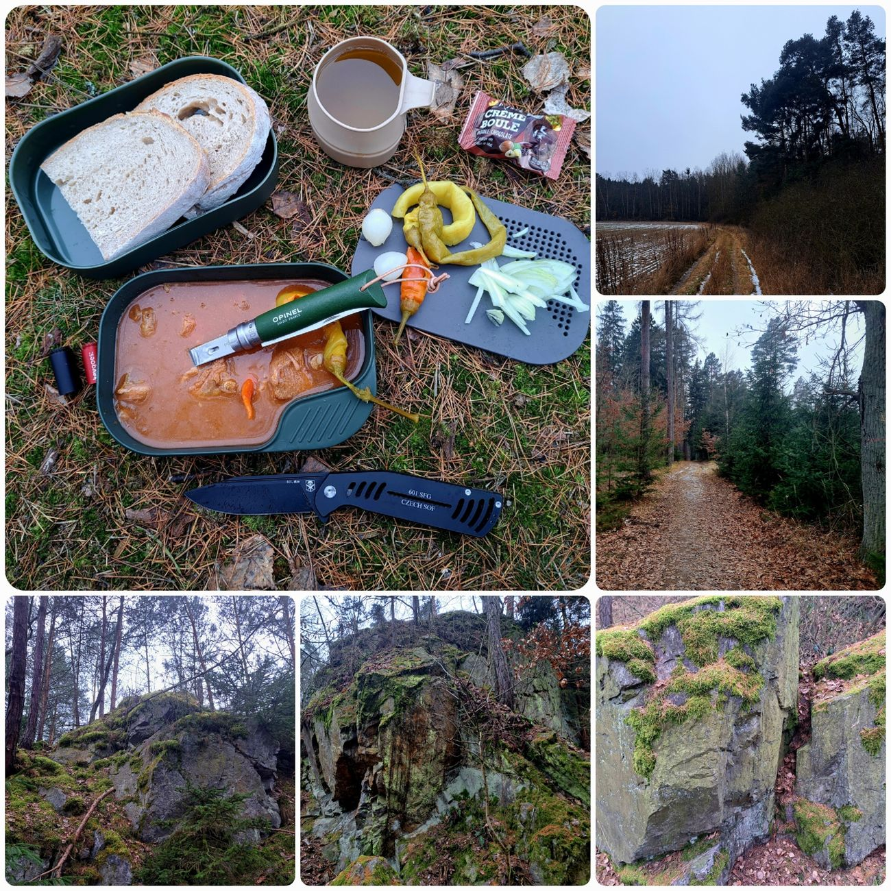
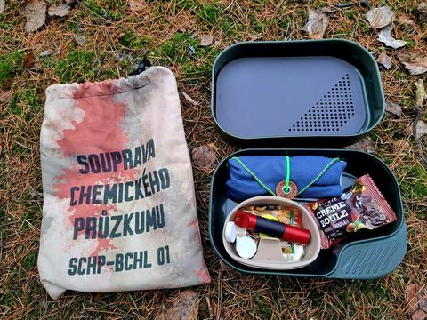
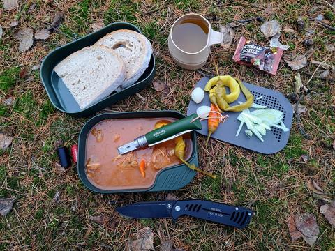

Potulka
Od odpadků ke kočičkám






Neděle. Teploty kolem nuly. Les v zimním režimu. A já zase vyrážím ven, protože doma to za mě nikdo neobejde. Jidáše jsem samozřejmě nečekal, ale člověk si to stejně musí ověřit, aby pak neměl pocit, že něco prošvihnul. Nepošvihnul. Ani jeden.
Jedním z dnešních bodů programu byla skalka z minulého týdne. Už tehdy jsem tam zahlédl ohniště a nějaké plechovky a dneska jsem si potvrdil, že dotyčný měl sice sílu donést si buřty, pivo a hořčici, ale už ne sílu odnést si prázdné obaly. Během pár minut jsem posbíral deset plechovek, dva tácky, dva kelímky od hořčice, čtyři PETky a prázdný repelent. Podle množství to vypadalo, že se tam konala akce, na kterou jsem ale nedostal pozvánku.
Pytel se naplnil rychle a místo zase vypadalo normálně. Já v tomhle nejsem žádný hrdina – jen mi přijde logické odnést si z lesa to, co si tam člověk přinese. A když už tam jsem, vezmu i to, co tam nechal někdo jiný. V batohu mám na to připravený pytlík, tak proč ho nepoužít.
Pak jsem se přesunul do Zaječí rokle, zkontroloval kešku a pokračoval ke skalám, kde jsem ještě nebyl. Po obchůzce jsem si nahoře udělal oběd. Wildo Camp‑A‑Box pořád funguje skvěle – doma si to člověk poskládá podle nálady a v lese jen otevře a jede. Dneska jsem měl hrneček, prkénko, hliníkovou kořenku Keygoes, piknik sadu od Opinelu a pořád zbylo místo na sladkost, čaj a komprimované ubrousky.
K obědu jsem vytáhl vepřový guláš od Express Menu. Je dobrý, ale trochu jemný a maso dle recenzí chutná „konzervovaně“, takže jsem přibalil cibuli a beraní rohy. A hned to mělo jiný charakter. K tomu chleba od Seberů a bylo hotovo.
Sada piknik od Opinelu funguje překvapivě dobře. Lžíce i vidlička jsou pevné, žádné nouzové plastové náhražky. Jediný problém je obal – mikrovlákno a jehličí se mají rádi až moc. Sundává se to hůř, ale jinak je to pěkná a praktická věc. Vzal jsem verzi bez nože, protože zelenou osmičku jsem dostal k Vánocům. Sada pasuje jen na Opinel No. 8.
Cestu zpět jsem vzal nezvykle zadní trasou, kterou většinou chodím opačně. A právě tam jsem si všiml něčeho, co jsem v lednu úplně nečekal – na jedné vrbě už byly kočičky. Ne moc, jen pár, ale i tak mě to zarazilo. Na konec ledna je to docela brzy. Les si zjevně jede vlastní kalendář a na meteorology moc nedá.
Po návratu do civilizace jsem se rozloučil s pytlem odpadků, který se mnou absolvoval skoro celou trasu.
Dnešní potulka nebyla o nálezech ani o rekordech. Spíš o tom, že když člověk chodí ven pravidelně, tak prostě občas uklidí po někom jiném, občas si dá dobrý oběd a občas jen projde lesem, který nic neskrývá a nic neslibuje. A možná právě proto tam stojí za to chodit. A když už i vrby naznačují, že jaro se letos nemůže dočkat, tak proč bych se nemohl těšit taky.
Na webu jsou vybrané fotky. Všech 32 fotek z této potulky najdete na Facebooku BCT Survival.